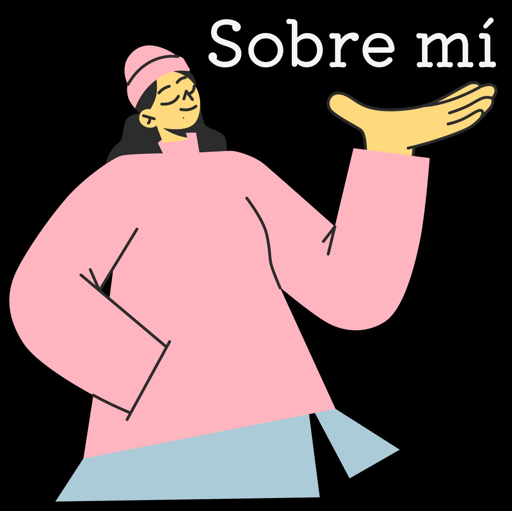

No creo en el diseño como algo puramente estético. Para mí, diseñar es solucionar problemas y organizar el caos (especialmente esos briefs que llegan un lunes por la mañana). Después de más de 6 años dando vueltas por agencias, estudios y marcas internacionales, he aprendido que lo más importante no es qué herramienta usas, sino cómo conectas la estrategia con el impacto visual.
Mi curiosidad me ha llevado a especializarme en IA Creativa. No para sustituir ideas, sino para darles esteroides. Mi flujo de trabajo actual se resume en esto:
/imagine prompt: creative_lead_isabel_correa -- high_responsibility -- international_experience --ai_powered -- humor_enabled
Uso la IA para lo que antes parecía ciencia ficción: desde generar shootings de producto hiperrealistas sin salir del estudio, hasta optimizar la producción de vídeo complejo o convertir diseños en código funcional en tiempo récord. Si se puede imaginar, probablemente pueda encontrar la forma de automatizarlo o escalarlo.
Lo que hago bien
2022 — Presente
Art Director & AI Creative Lead
Freelance · Internacional
Dirección creativa para marcas internacionales integrando herramientas de IA generativa en el flujo de producción visual: desde ideación hasta entrega de activos finales.
2020 — 2022
Senior Art Director
Agencia Digital · Madrid
Lideré la dirección visual de más de 40 campañas para clientes del sector moda, belleza y lifestyle en mercados europeos.
2018 — 2020
Diseñadora Visual & Art Director Jr.
Estudio Creativo · Barcelona
Producción de campañas de branding, identidad visual y dirección de fotografía. Aprendí a hacer magia con recursos limitados.